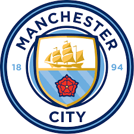

| الـبــيـــانــات الــشــخــصــيــة | |
| الاسم الكامل | تكيفين دي بروين |
| تاريخ الميلاد | 28 يونيو 1991 |
| محل الميلاد | غنت، درانجن، بلجيكا |
| العمر | 30 سنة |
| الطول | 1.81 متر |
| الجنسية | بلجــيـكـــــا |
| محل الاقامه الحالية | مانشستر |
| مركز اللعب | وســــط |
| النادي الحالي | مانشستر سيتي |
كيفين دي بروين (بالهولندية: Kevin De Bruyne؛ مواليد 28 يونيو 1991)، هو لاعب كرة قدم بلجيكي يلعب في مركز الوسط مع نادي مانشستر سيتي الإنجليزي ومنتخب بلجيكا لكرة القدم. أسلوب لعبه جعل العديد من وسائل الإعلام، المدربين، وزملائه يصنفونه كأحد أفضل لاعبي أوروبا، وكثيرا ما تم وصفه كـ"لاعب كرة قدم كامل". في عام 2017، صنفته صحيفة الغارديان كرابع أفضل لاعب في العالم. بدأ دي بروين مسيرته في جينك، حيث كان لاعباً عادياً وفاز بلقب دوري المحترفين البلجيكي 2010–11. في عام 2012، انضم إلى نادي تشيلسي الإنجليزي، حيث تم إشراكه في المباريات بشكل نادر ثم تمت إعارته إلى فيردر بريمن. وقع مع فولفسبورج مقابل 18 مليون جنيه استرليني في عام 2014، وفي عام 2015 حصل على لقب لاعب العام في ألمانيا. في وقت لاحق من ذلك العام، انضم إلى مانشستر سيتي مقابل 54 مليون جنيه استرليني. في خمسة مواسم مع السيتي، شارك دي بروين في أكثر من 200 مباراة وفاز بلقبين في الدوري الإنجليزي الممتاز، وأربعة ألقاب في كأس رابطة الأندية الإنجليزية المحترفة ولقب وحيد في كأس الاتحاد الإنجليزي. كان له دور مهم في حصول السيتي على 100 نقطة في موسم واحد في 2017–18 ليصبح أول فريق في الدوري الممتاز يصل إلى هذا الرقم. بالإضافة إلى ذلك، تم اختيار دي بروين كأفضل لاعب في نادي مانشستر سيتي، مرتين، في 2016 و2018. حقق دي بروين ظهوره الدولي الأول في عام 2010، لعب منذ حينها أكثر من 70 مباراة دولية لبلجيكا. كان كذلك جزءًا من التشكيلة البلجيكية التي وصلت إلى ربع نهائي كأس العالم 2014 ويورو 2016. في عام 2018، مثل بلجيكا في كأس العالم حيث حصل على المركز الثالث بعد الفوز على إنجلترا في مباراة تحديد المركز الثالث.